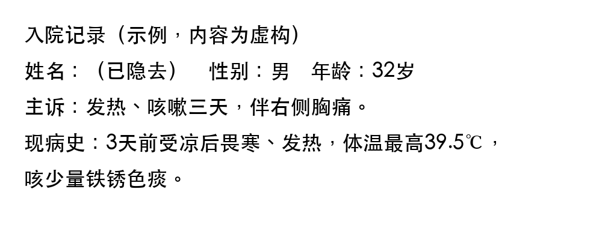
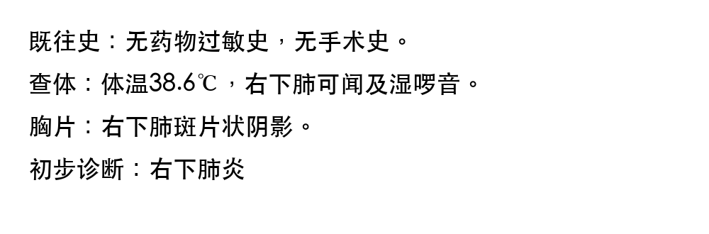

DoctorHelper
Research project only. It has not reached the stage of clinical use. Do not use it to make medical decisions.
A demo of DoctorHelper: it read two images of a made-up Chinese medical record with PaddleOCR, translated the text into English with Chrome's built-in Translator API and summarized it with t5-small, all on one computer. These are the saved results of that run (video). To read your own photos, run DoctorHelper on your computer (how).
Step 1: OCR


Text read by PaddleOCR:
入院记录（示例，内容为虚构） 姓名：（已隐去）性别：男年龄：32岁 主诉：发热丶咳嗽三天，伴右侧胸痛。 现病史：3天前受凉后畏寒丶发热，体温最高39.5℃， 咳少量铁锈色痰。 既往史：无药物过敏史，无手术史。 查体：体温38.6℃，右下肺可闻及湿啰音。 胸片：右下肺斑片状阴影。 初步诊断：右下肺炎
Step 2: Translate
Machine translation by Chrome's built-in Translator API:
Admission records (example, content is fictitious) Name: (Hidden) Gender: Male Age: 32 years old Chief complaint: fever, cough for three days, accompanied by chest pain on the right side. History of present disease: 3 days ago, after a cold, chills and fever, the highest body temperature was 39.5 ℃, Cough a small amount of rust-colored phlegm. Past history: no history of drug allergies, no history of surgery. Physical examination: body temperature is 38.6 ℃, and the lower lower lung can smell and wet rales. Chest X-ray: patch-like shadow in the lower right lower lung. Preliminary diagnosis: right lower pneumonia
Step 3: Summary
Summary by t5-small, made from the translation above:
3 days ago, after a cold, chills and fever, the highest body temperature was 39.5 °C, Cough a small amount of rust-colored phlegm. body temperature is 38.6 °C, and lower right lower lung can smell and wet rales.
How it is made: the English text is cut into whole sentences, grouped into pieces of about 480 characters, and t5-small, a small general-purpose model, rewrites each piece shorter. The pieces are joined and this repeats, for at most five rounds, until the text is about a third of its first length; it stops early when a round makes the text no shorter. Finally, sentences made of the same words are dropped.